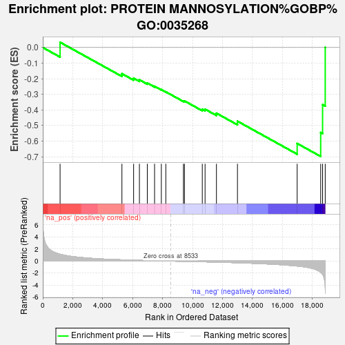
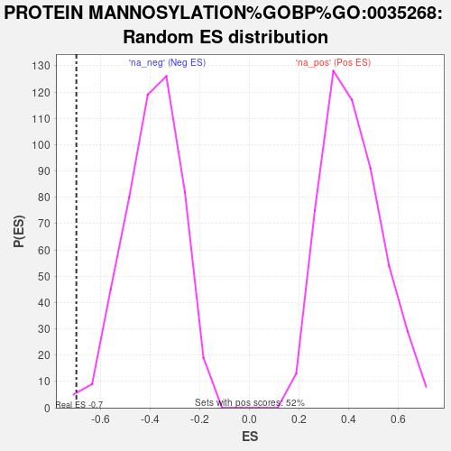

| | | Dataset | GFPPositive_GFPNegative |
| Phenotype | NoPhenotypeAvailable |
| Upregulated in class | na_neg |
| GeneSet | PROTEIN MANNOSYLATION%GOBP%GO:0035268 |
| Enrichment Score (ES) | -0.69849515 |
| Normalized Enrichment Score (NES) | -1.7926999 |
| Nominal p-value | 0.006185567 |
| FDR q-value | 0.86690015 |
| FWER p-Value | 0.982 |
Table: GSEA Results Summary

Fig 1: Enrichment plot: PROTEIN MANNOSYLATION%GOBP%GO:0035268
Profile of the Running ES Score & Positions of GeneSet Members on the Rank Ordered List
| SYMBOL | RANK IN GENE LIST | RANK METRIC SCORE | RUNNING ES | CORE ENRICHMENT | | 1 | CRPPA | 1155 | 1.134 | 0.0335 | No |
| 2 | DPM3 | 5283 | 0.210 | -0.1679 | No |
| 3 | TMTC3 | 6063 | 0.149 | -0.1968 | No |
| 4 | POMT1 | 6451 | 0.122 | -0.2071 | No |
| 5 | TMTC1 | 6977 | 0.088 | -0.2276 | No |
| 6 | DOLK | 7462 | 0.057 | -0.2485 | No |
| 7 | LARGE2 | 7914 | 0.032 | -0.2698 | No |
| 8 | FKRP | 8212 | 0.016 | -0.2842 | No |
| 9 | POMT2 | 9389 | -0.044 | -0.3429 | No |
| 10 | DPM1 | 9454 | -0.048 | -0.3423 | No |
| 11 | B4GAT1 | 10648 | -0.114 | -0.3962 | No |
| 12 | DPM2 | 10833 | -0.125 | -0.3955 | No |
| 13 | FKTN | 11592 | -0.173 | -0.4213 | No |
| 14 | POMGNT2 | 12996 | -0.278 | -0.4725 | No |
| 15 | RXYLT1 | 16980 | -0.822 | -0.6152 | Yes |
| 16 | TMTC4 | 18551 | -1.837 | -0.5450 | Yes |
| 17 | TMTC2 | 18678 | -2.217 | -0.3664 | Yes |
| 18 | LARGE1 | 18854 | -4.499 | 0.0004 | Yes |
Table: GSEA details [plain text format]

Fig 2: PROTEIN MANNOSYLATION%GOBP%GO:0035268: Random ES distribution
Gene set null distribution of ES for PROTEIN MANNOSYLATION%GOBP%GO:0035268